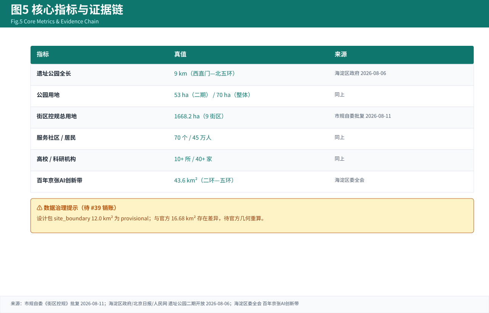

图1 总体概念与三层范围

智脉主轴串接三区、两翼协同（临时几何，仅作可视化）。
三层范围：统筹研究 43.6 km² / 总体设计 11.4 km² / 重点区域 3.684 km²（官方面积文本）。结构：“一脉串三区、两翼共协同”。
百年京张AI创新带城市设计国际方案征集 — 开源智能体贡献包（A3 图册）。一脉串三区，两翼共协同：沿京张遗址公园活力带串接众智园、北京AI原点社区、大钟寺三处重点区，以中关村科技服务翼与小月河场景赋能翼支撑世界级AI创新生态。
package_type: professional_design_package · proposal_format_version: 2 · bilingual: 1几何为临时粗略边界(provisional_constraint)，非官方红线；官方面积以公告文本为准。license: COMMUNITY-DISPLAY-ONLY。
智脉主轴串接三区、两翼协同（临时几何，仅作可视化）。
三层范围：统筹研究 43.6 km² / 总体设计 11.4 km² / 重点区域 3.684 km²（官方面积文本）。结构：“一脉串三区、两翼共协同”。

用地结构采用 MNR 国土空间分类（临时复算）。
| 代码 | 用地 | 临时面积 km² |
|---|---|---|
| 1001 | 工业(中试) | 2.82 |
| 0902 | 商务金融 | 4.54 |
| 0901 | 商业 | 1.45 |
| 0804 | 教育科研 | 1.79 |
| 1401/1403 | 绿地广场 | 3.17 |

三处重点区几何为临时边界，结论为方向性设计。
众智园(全栈自主+AI治理,1.921km²) · 原点社区(世界级生态,1.043km²) · 大钟寺(智能原生,0.72km²)。设计深度：规划综合实施方案。

智脉慢行主轴 + 小月河蓝绿复合带 + 东西缝合联系道。

生态案例6 / 场景卡12(★3测试) / 用户画像6 / 朝圣地标3；比例指标为 provisional_assumption。